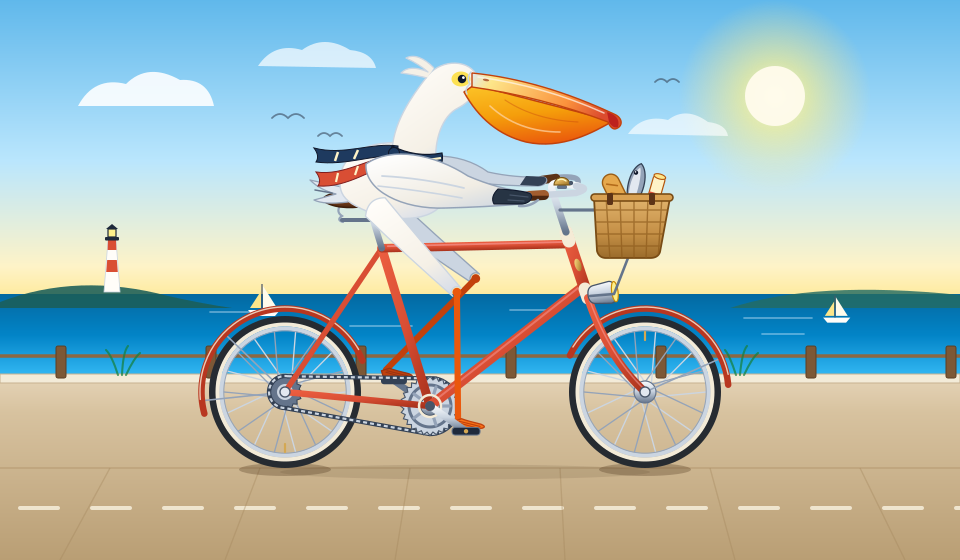
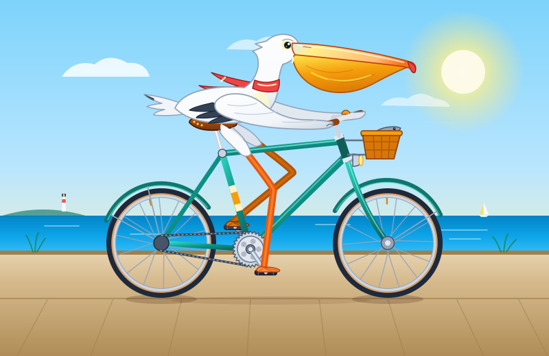

鹈鹕骑车 · Pelican Riding a Bicycle
SVG 与交互式 HTML 作品归档目录，按版本分文件夹存放，方便直接预览与横向对比；已集成 5 账号多光标协同搭建动画与 Cursor Agent Swarm 配置。


pro6 / Edition
暮海港湾巡游鹈鹕（Pro6）
朱红复古钢架巡航车配 18 根交叉编织辐条、前车篮（法棍/海鱼/航海图）与水手条纹围巾鹈鹕，支持 2-Bone IK 实时踩踏、晴空/落日/星夜/工程蓝图四场景、Web Audio 铜铃与喉囊弹鱼彩蛋及 SVG 导出。
pro6/index.html
pro6/pelican-bicycle.svg
pro6/README.md
pro6/pelican-bicycle.svg
pro6/README.md

pro5 / Edition
海滨巡航鹈鹕（Pro5）
零滤镜纯矢量海滨鹈鹕与海沫绿复古巡航车，支持 2-Bone 逆运动学实时踩踏、5 套光影/蓝图场景切换、Web Audio 车铃及一键复制/下载 SVG。
pro5/index.html
pro5/pelican-bicycle.svg
pro5/README.md
pro5/pelican-bicycle.svg
pro5/README.md

pro4 / Edition
鹈鹕骑行记（Pro4）
分层纯矢量海滨鹈鹕与钢架复古巡航车，支持双连杆逆运动学（IK）踏频同步、晨光/落日/星夜灯塔三光影切换、道具开关、Web Audio 车铃与实时帧 SVG 导出。
pro4/index.html
pro4/pelican-bicycle.svg
pro4/styles.css · app.js
pro4/README.md
pro4/pelican-bicycle.svg
pro4/styles.css · app.js
pro4/README.md

pro3 / Edition
海风鹈鹕骑行（Pro3）
精确自行车几何与双连杆逆向运动学（IK）驱动踩踏，车前藤篮载有鲜鱼与法棍，支持车速调节、晨光/落日切换、Web Audio 车铃及导出 SVG。
pro3/pelican.html
pro3/pelican.svg
pro3/README.md
pro3/pelican.svg
pro3/README.md

pro2 / Edition
海岸栈道鹈鹕骑行（Pro2）
含落日栈道 / 晴朗清晨 / 灯塔暮色三场景切换、实时 2-Bone IK 踩踏、视差海岸滚动、铜铃音效与 SVG 导出。
pro2/index.html
pro2/pelican.svg
pro2/README.md
pro2/pelican.svg
pro2/README.md

pro1 / Edition · Antigravity (AG)
海岸鹈鹕骑车（Pro1）
零依赖纯矢量内联 SVG，两段式反向运动学（2-Bone IK）驱动双腿踩踏、无打滑视差海岸与车轮滚动，支持晴空/落日车灯切换、Web Audio 铜车铃、喉囊弹鱼彩蛋及 SVG 复制下载。
pro1/index.html
pro1/pelican-bicycle.svg
pro1/README.md
pro1/pelican-bicycle.svg
pro1/README.md